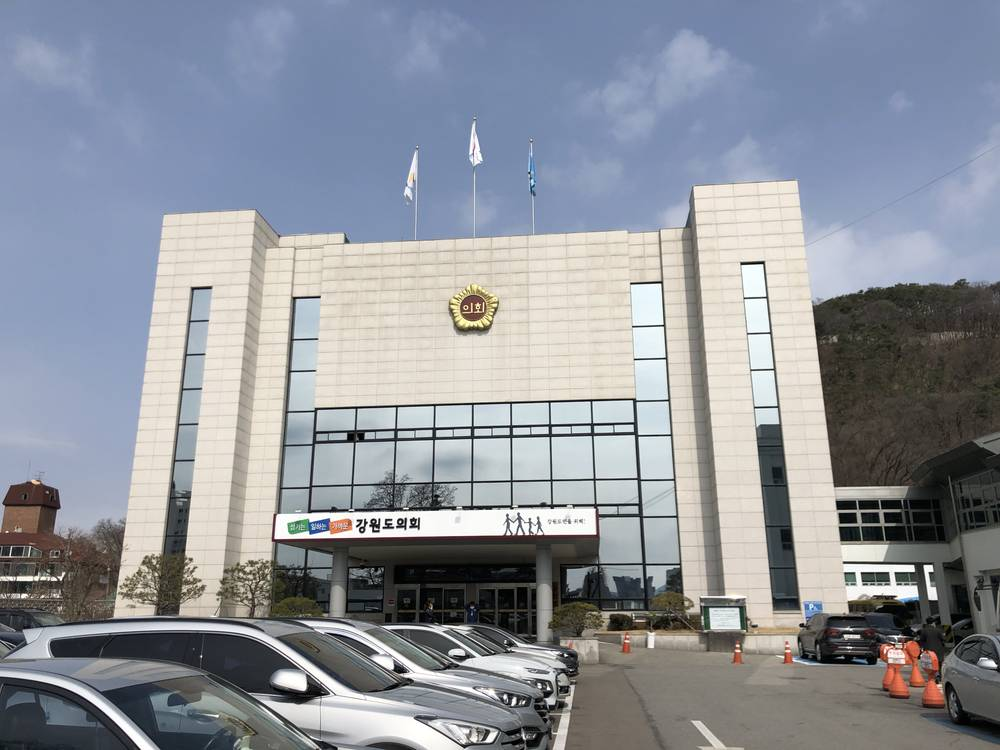

강원도의회 "햇빛소득마을, 전력망부터 확보해야"…양구 대암산 풍력 입지도 점검

이병구 의원, 산업국 행정사무감사서 46개 마을 924억 원 사업의 계통 연계 주문
강원특별자치도의회 이병구 의원이 산업국 행정사무감사에서 햇빛소득마을 조성사업과 공공주도 육상풍력 사업 추진 현황을 점검하고, 사업을 넓히기 전에 전력계통 확보가 먼저라고 주문했다. 도는 올해 12개 시군 46개 마을에서 총 924억 원 규모로 마을 단위 태양광발전소를 조성하며, 태양광 발전시설과 에너지저장장치 설치를 지원할 예정이다. 이 의원은 발전시설이 완공돼도 생산한 전력을 송전망에 연결하지 못하면 안정적인 운영과 수익이 어렵다며, 연계 가능성을 미리 확보하고 관계기관과 협력을 강화하라고 요구했다. 공공주도 육상풍력 계획입지에서는 양구 대암산 일대가 풍력자원 활용 가능성이 있는 곳으로 거론돼, 지역 특성과 자연환경을 반영한 면밀한 검토가 필요하다는 의견이 나왔다. 도는 2030년까지 주민참여형 풍력발전단지를 추진하며 풍황자원과 환경성, 주민 수용성, 전력계통을 종합해 부지를 고를 계획이다. 민간주택을 대상으로 한 태양광·태양열·지열 보급 지원사업도 계속 넓혀야 한다는 점이 함께 강조됐다.
시민에너지 관점
924억 원을 들여 마을 발전소를 짓고도 전력망에 닿지 못하면 마을에 돌아가는 수익이 없다는 지적은 정확하다. 마을 소유의 발전·배전망으로 에너지를 꾸려 온 스코틀랜드 에이그(Eigg)섬이나 덴마크 삼쇠섬은 주민이 계획 단계부터 설비 운영까지 직접 맡아 지역에 이익이 남게 했다. 양구 대암산 풍력처럼 입지를 둘러싼 갈등이 커질 수 있다는 우려가 있지만, 주민이 지분과 의사결정에 처음부터 참여하는 지역 소유 방식이 수용성을 높이는 가장 확실한 길이다. 도는 사업 공모에 앞서 마을별 전력계통 연계 가능성을 공개하고, 양구 주민에게는 풍력 사업의 지분 참여 방안부터 설명하기 바란다.
출처: 엔사이드 2026-11-10 김아영 원문 보기
江原道議会「日差し所得村、まず送電網の確保を」…楊口・大岩山の風力立地も点検
イ・ビョング議員、産業局の行政事務監査で46村・924億ウォン事業の系統連系を求める
江原特別自治道議会（강원특별자치도의회）のイ・ビョング（이병구）議員は産業局の行政事務監査で、햇빛소득마을（「日差し所得村」）造成事業と公共主導の陸上風力事業の進捗を点検し、事業を広げる前に電力系統の確保が先だと求めた。道は今年、12市郡46村で総額924億ウォン規模の村単位の太陽光発電所を造成し、太陽光発電設備とエネルギー貯蔵装置の設置を支援する予定だ。議員は、発電設備が完成しても生産した電力を送電網につなげなければ安定的な運営と収益が難しいとして、連系の可能性を事前に確保し、関係機関との協力を強めるよう要求した。公共主導の陸上風力の計画立地では、楊口（양구）郡の大岩山（대암산）一帯が風力資源の活用可能性がある場所として挙げられ、地域特性と自然環境を踏まえた綿密な検討が必要だとの意見が出た。道は2030年までに住民参加型の風力発電団地を進めており、風況資源、環境性、住民受容性、電力系統を総合して敷地を選ぶ計画だ。民間住宅向けの太陽光・太陽熱・地熱の普及支援事業も引き続き拡大すべきだという点が併せて強調された。
市民エネルギーの視点
924億ウォンをかけて村の発電所を建てても送電網につながらなければ、村に戻る収益はないという指摘は的確だ。村が所有する発電・配電網でエネルギーを運営してきたスコットランドのエイグ（Eigg）島やデンマークのサムソ島は、住民が計画段階から設備の運営まで直接担い、地域に利益を残した。楊口・大岩山の風力のように立地をめぐる対立が広がりかねないとの懸念はあるが、住民が最初から出資と意思決定に参加する地域所有の方式こそ、受容性を高める最も確かな道だ。道は事業公募に先立って村ごとの電力系統連系の可否を公開し、楊口の住民には風力事業への出資参加の方法をまず説明してほしい。
出典: 엔사이드 2026-11-10 김아영 原文を読む
江原道议会：“阳光收入村要先确保电网”…同时检视杨口大岩山风电选址
李炳九议员在产业局行政事务监察中要求落实46个村、924亿韩元项目的并网
江原特别自治道议会（강원특별자치도의회）议员李炳九（이병구）在对产业局的行政事务监察中，检视了햇빛소득마을（“阳光收入村”）建设项目和公共主导陆上风电项目的推进情况，要求在扩大项目规模之前先确保电力系统。该道今年将在12个市郡的46个村庄推进总额924亿韩元的村级光伏电站项目，并支持安装光伏发电设施和储能装置。李议员指出，即使发电设施建成，如果产出的电力无法接入输电网，就难以稳定运营和获得收益，要求提前确保并网可能性并加强与相关机构的合作。在公共主导陆上风电的规划选址方面，杨口（양구）郡大岩山（대암산）一带被提及具有风能利用潜力，有意见认为需要结合地区特点和自然环境进行细致审查。该道正推进到2030年建设居民参与型风电场，计划综合风能资源、环境性、居民接受度和电力系统来选定场地。会上还强调，面向民用住宅的光伏、太阳能热利用和地热推广支持项目也应持续扩大。
市民能源视角
花924亿韩元建起村级电站，若接不上电网，村里就没有收益，这一指摘十分准确。苏格兰的艾格（Eigg）岛和丹麦的萨姆索岛由村民拥有发电和配电网络，居民从规划阶段到设备运营全程亲自负责，让利益留在本地。有人担心像杨口大岩山风电这样的选址会引发矛盾，但让居民从一开始就参与持股和决策的地方所有模式，才是提高接受度最可靠的途径。希望该道在项目公开征集之前公开各村的电力系统并网可能性，并先向杨口居民说明参与风电项目持股的办法。
来源: 엔사이드 2026-11-10 김아영 查看原文
Gangwon Provincial Council Says Sunlight Income Villages Need Grid Access First, and Reviews Yanggu Daeamsan Wind Siting
Councillor Lee Byeong-gu presses for grid connection on the 46-village, 92.4 billion won programme during an audit of the industry bureau
Gangwon Special Self-Governing Province Councillor Lee Byeong-gu (이병구) reviewed the Sunlight Income Village (햇빛소득마을) programme and the publicly led onshore wind project during an administrative audit of the industry bureau, and called for securing grid capacity before expanding the programme. This year the province is building village-scale solar plants in 46 villages across 12 cities and counties at a total cost of 92.4 billion won, supporting solar installations and energy storage systems. Lee said that even a finished plant cannot operate stably or earn income if its power cannot be connected to the transmission grid, and urged the province to secure connection prospects in advance and strengthen cooperation with the agencies involved. In the publicly led onshore wind siting plan, the Daeamsan (대암산) area of Yanggu (양구) County was named as a place with wind resource potential, and opinions were raised that it needs careful review reflecting local conditions and the natural environment. The province is pursuing resident-participation wind farms by 2030 and plans to pick sites after weighing wind conditions, environmental impact, local acceptance and grid capacity. The audit also stressed that support for solar, solar thermal and geothermal systems in private homes should keep expanding.
Citizen Energy View
The warning is sound: spending 92.4 billion won on village plants brings the village no income if they cannot reach the grid. Scotland's Isle of Eigg and Denmark's Samsø island, which run energy through community-owned generation and distribution, let residents handle everything from planning to operation and kept the benefits local. Some fear that siting disputes, as at Daeamsan, could grow, but a locally owned model in which residents hold shares and take part in decisions from the start is the surest way to build acceptance. The province should publish each village's grid connection prospects before project calls and first explain to Yanggu residents how they can take a stake in wind projects.
Source: 엔사이드 2026-11-10 김아영 Read the original